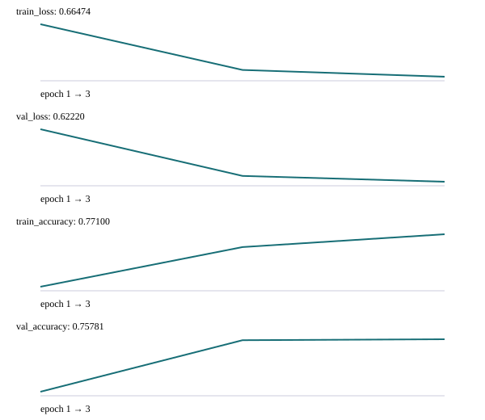
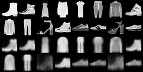
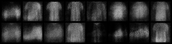
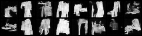
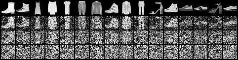

真实实验记录与验证边界
记录日期：2026-10-28。以下数字来自真实运行的FashionMNIST实验，不是目标值或示意数据。原始记录仅将本机目录改为项目相对路径，保留配置、划分哈希、曲线、环境和结果。代码见完整实验，理论见数学章。
1. 环境、划分与实验预算
实测Python 3.9.7、torch 2.8.0+cu128、torchvision 0.23.0+cu128，GPU：NVIDIA GeForce RTX 5060 Laptop GPU。三次seed为7、17、27；seed同时改变模型初始化、数据子集/划分和训练随机性，下表样本标准差包含这些来源，不能解释为仅初始化噪声或置信区间。
CNN/VAE/DDPM：训练2048、验证512，batch64，分别3/6/10轮；VAE潜变量16、beta1；DDPM200步。DINO：训练1024、验证256，batch16，线性头20轮、lr0.01，骨干冻结；预训练和随机骨干在各seed内使用相同划分、处理与预算。模型按验证指标选最好一轮，报告的是验证分数，不能把它当作无偏测试估计。DINO与CNN的数据量不同，也不用于宣称公平架构排名。
2. 三种子结果
| 指标 | seed7 | seed17 | seed27 | 均值 ± 样本标准差 |
|---|---|---|---|---|
| CNN验证准确率 | 75.78% | 72.27% | 70.31% | 72.79 ± 2.77% |
| VAE验证负目标 | 282.12122 | 283.42841 | 286.75586 | 284.10 ± 2.39 |
| DDPM验证噪声MSE | 0.08134 | 0.06964 | 0.09290 | 0.08 ± 0.01 |
| DINOv2预训练线性评价 | 87.89% | 87.11% | 82.03% | 85.68 ± 3.18% |
| DINOv2随机骨干线性评价 | 54.69% | 54.69% | 47.66% | 52.34 ± 4.06% |
VAE“负目标”为每图像素BCE求和加KL，DDPM为逐元素噪声MSE，不同方法间不能比较损失大小。DDPM零预测器MSE约1；当前模型有明显去噪学习，但生成质量仍需看图。三种子只是小样本稳定性检查，不足以支持广泛性能结论。
3. 一次锁定设置的CNN测试
在不根据测试结果改变模型或超参数的前提下，重跑seed7原CNN设置，并按验证集选best，在官方10000张测试图上评价一次：准确率 74.71%，交叉熵 0.69948。配置和混淆矩阵见最终测试记录。三种子统计仍是验证统计；未对DINO或生成模型报告最终测试分数。
4. 结果图与失败分析
CNN

每个面板独立缩放，以JSON的数值为准。seed7验证混淆矩阵中，Pullover有19张被预测为Coat、18张为Shirt；Shirt也常被预测成Coat。小模型、小数据与相近服饰外观限制了准确率；这比只说“模型收敛了”提供更多改进线索。
VAE

前16张为验证原图，后16张为均值潜变量重建。模型保留了轮廓，但鞋和上衣细节明显模糊。

这是固定seed的完整16张采样，不是挑选最好样本；整体模糊，部分样本不易辨认。可通过beta/容量/观测模型对照研究原因，不把训练损失下降等同于高保真生成。
DDPM

能看到服饰与鞋的轮廓，仍有破碎、噪点和畸形。训练规模较小且没有FID或人工盲评，不对生成效果作论文级质量判断。

从上至下为早期到末期，共4行、每行16张。末期图像主要为噪声，与开始反向采样的近似高斯条件一致。
DINOv2线性评价
seed7预训练特征最佳验证准确率87.89%，随机骨干54.69%；三seed均观察到预训练优势。预训练组训练交叉熵下降到约0.006，但验证损失在后期上升，说明仍有过拟合；因此保存验证best，而不是默认用最后一轮。随机骨干不是“零信息”模型，在服饰这类简单任务上也可能提供可分特征。
5. 原始记录、耗时与复查
- CNN：seed 7 · seed 17 · seed 27
- VAE：seed 7 · seed 17 · seed 27
- DDPM：seed 7 · seed 17 · seed 27
- PROBE：seed 7 · seed 17 · seed 27
| 运行 | seed7 / seed17 / seed27 墙钟秒数 |
|---|---|
| CNN | 68.9 / 4.7 / 0.9 |
| VAE | 2.0 / 12.2 / 1.6 |
| DDPM | 7.0 / 56.0 / 6.6 |
| PROBE | 155.1 / 32.6 / 11.8 |
耗时由程序从数据准备计到结果写出前，包含该次需要的下载与特征提取；seed7 CNN与DINO首次下载，其余使用缓存，不能直接比较为算法速度。GPU负载和CPU线程也会影响耗时。检查点较大且可重新训练，未打包；指标和小图已随仓库提供。
复现实测记录：按实验页四条命令运行seed7，然后为每条命令添加 --seed 17 / --seed 27，输出目录分别用 runs/verified-模型-17 和 runs/verified-模型-27；最后以CNN相同seed7设置加 --evaluate-test --output runs/verified-cnn-final 执行锁定测试。完成后运行 python scripts/export_evidence.py、python scripts/build.py 更新本页。导出脚本不训练模型、不生成虚构结果，缺记录会直接报错。
6. 自动化检查与尚未覆盖的部分
python -m unittest discover -s tests -v 覆盖10项数值/流程检查：有限差分梯度、非零高斯KL、attention mask及投影梯度、DDPM均值/方差与端点、VAE编码器梯度、DDPM反向与采样有限性、ODE/SDE统计、残批损失汇总、CPU断点恢复一致性、冻结骨干梯度隔离。GitHub Actions另运行离线tiny线性评价冒烟，不下载数据或预训练权重。
网站构建、内部链接/表格检查和所有页面KaTeX公式编译另行验证。自动化不是独立学术评审；没有从头训练DINO、没有大型检测/分割或Flow Matching完整模型实验，也未验证所有操作系统/GPU。是否达到100分考核仍需要学习者提交自己的推导、对照、报告与复现证据。